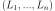

Machine Learning#
Matrices#
- mlstatpy.ml.matrices.gram_schmidt(mat, change=False)[source][source]#
Applies the Gram–Schmidt process. Due to performance, every row is considered as a vector.
@param mat matrix @param change returns the matrix to change the basis @return new matrix or (new matrix, change matrix)
The function assumes the matrix mat is horizontal: it has more columns than rows.
Note
The implementation could be improved by directly using BLAS function.
<<<
import numpy from mlstatpy.ml.matrices import gram_schmidt X = numpy.array([[1., 2., 3., 4.], [5., 6., 6., 6.], [5., 6., 7., 8.]]) T, P = gram_schmidt(X, change=True) print(T) print(P)
>>>
[[ 0.183 0.365 0.548 0.73 ] [ 0.736 0.502 0.024 -0.453] [ 0.651 -0.67 -0.181 0.308]] [[ 0.183 0. 0. ] [-0.477 0.243 0. ] [-1.814 -1.81 2.303]]
- mlstatpy.ml.matrices.linear_regression(X, y, algo=None)[source][source]#
Solves the linear regression problem, find
 which minimizes
which minimizes
 , based on the algorithm
Arbre de décision optimisé pour les régressions linéaires.
, based on the algorithm
Arbre de décision optimisé pour les régressions linéaires.- Paramètres:
X – features
y – targets
algo – None to use the standard algorithm , “gram”, “qr”
- Renvoie:
beta
<<<
import numpy from mlstatpy.ml.matrices import linear_regression X = numpy.array([[1., 2., 3., 4.], [5., 6., 6., 6.], [5., 6., 7., 8.]]).T y = numpy.array([0.1, 0.2, 0.19, 0.29]) beta = linear_regression(X, y, algo="gram") print(beta)
>>>
[ 0.077 0.037 -0.032]
algo=Nonecomputes .algo='qr'uses a QR decomposition and calls function dtrtri to invert an upper triangular matrix.algo='gram'usesgram_schmidtand then computes the solution of the linear regression (see above for a link to the algorithm).
- mlstatpy.ml.matrices.streaming_gram_schmidt_update(Xk, Pk)[source][source]#
Updates matrix
 to produce
which is the matrix P in algorithm
Streaming Linear Regression.
The function modifies the matrix Pk
given as an input.
to produce
which is the matrix P in algorithm
Streaming Linear Regression.
The function modifies the matrix Pk
given as an input.@param Xk kth row @param Pk matrix P at iteration k-1
- mlstatpy.ml.matrices.streaming_gram_schmidt(mat, start=None)[source][source]#
Solves the linear regression problem, find
which minimizes
, based on
algorithm Streaming Gram-Schmidt.@param mat matrix @param start first row to start iteration,
X.shape[1]by default @return iterator onThe function assumes the matrix mat is horizontal: it has more columns than rows.
<<<
import numpy from mlstatpy.ml.matrices import streaming_gram_schmidt X = numpy.array([[1, 0.5, 10., 5., -2.], [0, 0.4, 20, 4., 2.], [0, 0.7, 20, 4., 2.]], dtype=float).T for i, p in enumerate(streaming_gram_schmidt(X.T)): print("iteration", i, "\n", p) t = X[:i + 3] @ p.T print(t.T @ t)
>>>
iteration 0 [[ 0.099 0. 0. ] [-0.953 0.482 0. ] [-0.287 -3.338 3.481]] [[ 1.000e+00 -1.310e-15 -2.238e-15] [-1.310e-15 1.000e+00 1.390e-14] [-2.238e-15 1.390e-14 1.000e+00]] iteration 1 [[ 0.089 0. 0. ] [-0.308 0.177 0. ] [-0.03 -3.334 3.348]] [[ 1.000e+00 -3.570e-16 -1.808e-15] [-3.570e-16 1.000e+00 2.423e-15] [-1.808e-15 2.423e-15 1.000e+00]] iteration 2 [[ 0.088 0. 0. ] [-0.212 0.128 0. ] [-0.016 -3.335 3.342]] [[ 1.000e+00 1.756e-17 -4.660e-15] [ 1.756e-17 1.000e+00 9.833e-16] [-4.660e-15 9.833e-16 1.000e+00]]
- mlstatpy.ml.matrices.streaming_linear_regression_update(Xk, yk, XkXk, bk)[source][source]#
Updates coefficients
 to produce
to produce  in Streaming Linear Regression. The function modifies
the matrix Pk given as an input.
in Streaming Linear Regression. The function modifies
the matrix Pk given as an input.- Paramètres:
Xk – kth row
yk – kth target
XkXk – matrix
 , updated by the function
, updated by the functionbk – current coefficient (updated by the function)
- mlstatpy.ml.matrices.streaming_linear_regression(mat, y, start=None)[source][source]#
Streaming algorithm to solve a linear regression. See Streaming Linear Regression.
@param mat features @param y expected target @return iterator on coefficients
<<<
import numpy from mlstatpy.ml.matrices import streaming_linear_regression, linear_regression X = numpy.array([[1, 0.5, 10., 5., -2.], [0, 0.4, 20, 4., 2.], [0, 0.7, 20, 4., 3.]], dtype=float).T y = numpy.array([1., 0.3, 10, 5.1, -3.]) for i, bk in enumerate(streaming_linear_regression(X, y)): bk0 = linear_regression(X[:i + 3], y[:i + 3]) print("iteration", i, bk, bk0)
>>>
iteration 0 [ 1. 0.667 -0.667] [ 1. 0.667 -0.667] iteration 1 [ 1.03 0.682 -0.697] [ 1.03 0.682 -0.697] iteration 2 [ 1.036 0.857 -0.875] [ 1.036 0.857 -0.875]
- mlstatpy.ml.matrices.streaming_linear_regression_gram_schmidt_update(Xk, yk, Xkyk, Pk, bk)[source][source]#
Updates coefficients
to produce
in Streaming Linear Regression.
The function modifies the matrix Pk given as an input.- Paramètres:
Xk – kth row
yk – kth target
Xkyk – matrix (updated by the function)
Pk – Gram-Schmidt matrix produced by the streaming algorithm (updated by the function)
- Renvoie:
bk current coefficient (updated by the function)
- mlstatpy.ml.matrices.streaming_linear_regression_gram_schmidt(mat, y, start=None)[source][source]#
Streaming algorithm to solve a linear regression with Gram-Schmidt algorithm. See Streaming Linear Regression version Gram-Schmidt.
@param mat features @param y expected target @return iterator on coefficients
<<<
import numpy from mlstatpy.ml.matrices import streaming_linear_regression, linear_regression X = numpy.array([[1, 0.5, 10., 5., -2.], [0, 0.4, 20, 4., 2.], [0, 0.7, 20, 4., 3.]], dtype=float).T y = numpy.array([1., 0.3, 10, 5.1, -3.]) for i, bk in enumerate(streaming_linear_regression(X, y)): bk0 = linear_regression(X[:i + 3], y[:i + 3]) print("iteration", i, bk, bk0)
>>>
iteration 0 [ 1. 0.667 -0.667] [ 1. 0.667 -0.667] iteration 1 [ 1.03 0.682 -0.697] [ 1.03 0.682 -0.697] iteration 2 [ 1.036 0.857 -0.875] [ 1.036 0.857 -0.875]
Métriques#
- class mlstatpy.ml.roc.ROC(y_true=None, y_score=None, sample_weight=None, df=None)[source][source]
Helper to draw a ROC curve.
Initialisation with a dataframe and two or three columns:
column 1: score (y_score)
column 2: expected answer (boolean) (y_true)
column 3: weight (optional) (sample_weight)
- Paramètres:
y_true – if df is None, y_true, y_score, sample_weight must be filled, y_true is whether or None the answer is true. y_true means the prediction is right.
y_score – score prediction
sample_weight – weights
df – dataframe or array or list, it must contains 2 or 3 columns always in the same order
- mlstatpy.ml.voronoi.voronoi_estimation_from_lr(L, B, C=None, D=None, cl=0, qr=True, max_iter=None, verbose=False)[source][source]#
Determines a Voronoi diagram close to a convex partition defined by a logistic regression in n classes. a row matrix . Every border between two classes i and j is defined by:
 .
.The function looks for a set of points from which the Voronoi diagram can be inferred. It is done through a linear regression with norm L1. See Régression logistique, diagramme de Voronoï, k-Means.
@param L matrix @param B vector @param C additional conditions (see below) @param D addition condictions (see below) @param cl class on which the additional conditions applies @param qr use quantile regression @param max_iter number of condition to remove until convergence @param verbose display information while training @return matrix

The function solves the linear system:
If the number of dimension is big and the number of classes small, the system has multiple solution. Addition condition must be added such as where i=cl,
 is the Voronoï point attached to class cl.
Quantile regression
is not implemented in scikit-learn.
We use QuantileLinearRegression.
is the Voronoï point attached to class cl.
Quantile regression
is not implemented in scikit-learn.
We use QuantileLinearRegression.After the first iteration, the function determines the furthest pair of points and removes it from the list of equations. If max_iter is None, the system goes until the number of equations is equal to the number of points * 2, otherwise it stops after max_iter removals. This is not the optimal pair to remove as they could still be neighbors but it should be a good heuristic.
Plus proches voisins#
Tree and neural networks#
- class mlstatpy.ml._neural_tree_node.NeuralTreeNode(weights, bias=None, activation='sigmoid', nodeid=-1, tag=None)[source][source]
One node in a neural network.
- Paramètres:
weights – weights
bias – bias, if None, draws a random number
activation – activation function
nodeid – node id
tag – unused but to add information on how this node was created
- class mlstatpy.ml.neural_tree.NeuralTreeNet(dim, empty=True)[source][source]
Node ensemble.
- Paramètres:
dim – space dimension
empty – empty network, other adds an identity node
<<<
import numpy from mlstatpy.ml.neural_tree import NeuralTreeNode, NeuralTreeNet w1 = numpy.array([-0.5, 0.8, -0.6]) neu = NeuralTreeNode(w1[1:], bias=w1[0], activation='sigmoid') net = NeuralTreeNet(2, empty=True) net.append(neu, numpy.arange(2)) ide = NeuralTreeNode(numpy.array([1.]), bias=numpy.array([0.]), activation='identity') net.append(ide, numpy.arange(2, 3)) X = numpy.abs(numpy.random.randn(10, 2)) pred = net.predict(X) print(pred)
>>>
/home/xadupre/github/mlstatpy/mlstatpy/ml/_neural_tree_node.py:192: DeprecationWarning: Conversion of an array with ndim > 0 to a scalar is deprecated, and will error in future. Ensure you extract a single element from your array before performing this operation. (Deprecated NumPy 1.25.) self.coef[0] = bias [[0.977 1.195 0.393 0.393] [0.638 0.124 0.484 0.484] [0.066 0.585 0.31 0.31 ] [0.223 0.374 0.367 0.367] [0.257 0.494 0.356 0.356] [0.095 1.646 0.196 0.196] [0.427 0.711 0.358 0.358] [0.778 1.148 0.362 0.362] [0.844 0.645 0.447 0.447] [1.235 1.104 0.457 0.457]]
- class mlstatpy.ml.neural_tree.BaseNeuralTreeNet(estimator, optimizer=None, max_iter=100, early_th=None, verbose=False, lr=None, lr_schedule=None, l1=0.0, l2=0.0, momentum=0.9)[source][source]
Classifier or regressor following scikit-learn API.
- Paramètres:
estimator – instance of
NeuralTreeNet.X – training set
y – training labels
optimizer – optimizer, by default, it is
SGDOptimizer.max_iter – number maximum of iterations
early_th – early stopping threshold
verbose – more verbose
lr – to overwrite learning_rate_init if optimizer is None (unused otherwise)
lr_schedule – to overwrite lr_schedule if optimizer is None (unused otherwise)
l1 – L1 regularization if optimizer is None (unused otherwise)
l2 – L2 regularization if optimizer is None (unused otherwise)
momentum – used if optimizer is None
- class mlstatpy.ml.neural_tree.NeuralTreeNetClassifier(estimator, optimizer=None, max_iter=100, early_th=None, verbose=False, lr=None, lr_schedule=None, l1=0.0, l2=0.0, momentum=0.9)[source][source]
Classifier following scikit-learn API.
- Paramètres:
estimator – instance of
NeuralTreeNet.optimizer – optimizer, by default, it is
SGDOptimizer.max_iter – number maximum of iterations
early_th – early stopping threshold
verbose – more verbose
lr – to overwrite learning_rate_init if optimizer is None (unused otherwise)
lr_schedule – to overwrite lr_schedule if optimizer is None (unused otherwise)
l1 – L1 regularization if optimizer is None (unused otherwise)
l2 – L2 regularization if optimizer is None (unused otherwise)
momentum – used if optimizer is None
- class mlstatpy.ml.neural_tree.NeuralTreeNetRegressor(estimator, optimizer=None, max_iter=100, early_th=None, verbose=False, lr=None, lr_schedule=None, l1=0.0, l2=0.0, momentum=0.9)[source][source]
Regressor following scikit-learn API.
- Paramètres:
estimator – instance of
NeuralTreeNet.optimizer – optimizer, by default, it is
SGDOptimizer.max_iter – number maximum of iterations
early_th – early stopping threshold
verbose – more verbose
lr – to overwrite learning_rate_init if optimizer is None (unused otherwise)
lr_schedule – to overwrite lr_schedule if optimizer is None (unused otherwise)
l1 – L1 regularization if optimizer is None (unused otherwise)
l2 – L2 regularization if optimizer is None (unused otherwise)
momentum – used if optimizer is None